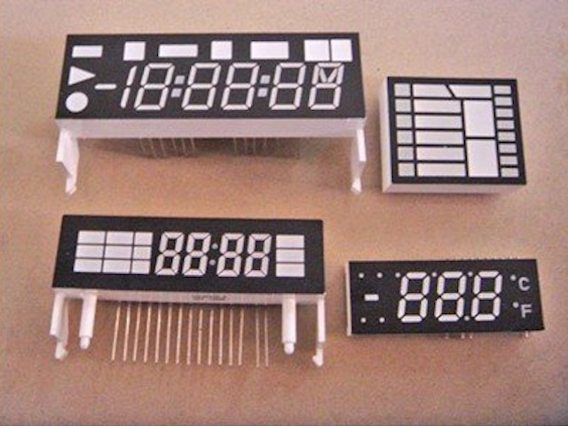
El LED
Sense entrar en consideracions físiques o electròniques sobre el silici i els diferents dopants que fan possible l’existència dels LEDs, tots sabem que n’existeixen de diferents mides i colors. Podem trobar actualment fins i tot aquells que tenen la possibilitat de mostrar-nos més d’un color (bi-color, tri-color), o fins i tot els LEDs RGB, que permeten la construcció de qualsevol color activant independentment cadascun dels tres colors bàsics (vermell, verd i blau) a diferents nivells d’intensitat.
Per al nostre estudi inicial considerarem només els LEDs d’un sol color, els tradicionals. Pensi’s, per tant, en el típic LED de color vermell, de 5mm de diàmetre.
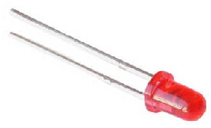
Aquests LEDs tenen, com a característica principal, que amb només 10mA de corrent al seu través i un mínim d’entre 1.7V i 2.2V entre els seus terminals, ja donen prou llum com per a considerar-los plenament encesos.
Per tant, el mecanisme de càlcul és senzill:
- Hem d’assegurar-nos que la tensió disponible és superior als 1.7V – 2.2V
- La intensitat de llum generada és proporcional al corrent que passa al seu través
- Si tenim més de 1.7V – 2.2V, hem de col·locar una resistència limitadora que es quedi amb la resta de tensió; aprofitant-la, de retruc, per a fixar el corrent que passarà a través del LED
Amb tot el que s’ha dit, assumeixi’s el circuit de la figura següent:
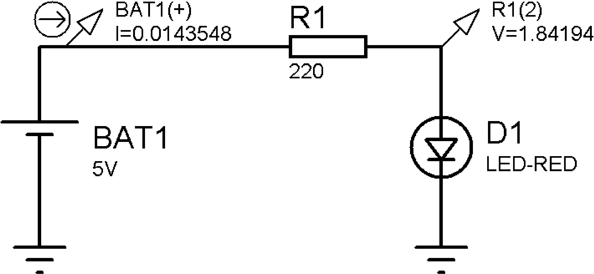
En aquesta simulació de Proteus pot veure’s com, amb una alimentació de 5V, una resistència de 220Ω fa que el corrent que passa a través del LED sigui d’aproximadament 14mA. En la majoria de casos, aquest nivell de brillantor és més que suficient.
El càlcul involucrat és el següent:
- Suposem que volem encendre el LED amb 15mA de corrent (nivell de llum intens, però no extrem)
- Considerem que el LED treballa a 1.7V
Aleshores,
\[ R=\frac{5-1.7}{0.015}=220\Omega \]
Així es fa per trobar la resistència adequada per a cada cas de tensió i corrent desitjats.
El valor més habitual de resistència limitadora és de 220Ω o 330Ω, per a una alimentació a 5V. A vegades 470Ω per a il·luminació suau:
- Amb R=220Ω: \[I=\frac{5-1.7}{220}=15\textrm{mA}\]
- Amb R=330Ω: \[I=\frac{5-1.7}{330}=10\textrm{mA}\]
- Amb R=470Ω: \[I=\frac{5-1.7}{470}=7\textrm{mA}\]
També podem posar el LED a la part superior, i deixar la resistència a sota. És a dir, intercanviant els papers de resistència i LED.
Els circuits de lògica digital, els microprocessadors i altres components d’altes prestacions, lliuren un “0” o un “1” lògics, que queden codificats amb una tensió baixa i una tensió alta, respectivament.
Podem aprofitar el cas de sortida “1” per encendre un LED, connectant-lo al zero a través d’una resistència, com abans. Si el terminal treu un “0”, el LED romandrà apagat.
Però també podem aprofitar el cas de sortida a “0” per a encendre el LED, ara connectant-lo a través d’una resistència al positiu de l’alimentació. El terminal treurà un “0” lògic, que serà una tensió baixa, i el LED s’encendrà. Si el terminal treu un “1”, el LED romandrà apagat.
Els valors concrets amb què això succeeix poden variar, considerant que el nivell mínim d’operació d’un transistor és de 0.6V. Això comporta que, habitualment, el “0” queda codificat amb un nivell baix de 0.6V aproximadament; mentre que el “1”, nivell alt, és d’uns 4V.
Això permet que, de fet, els circuits lògics podem actuar directament sobre un LED, sempre i quan el circuit integrat determinat tingui prou corrent disponible a les seves sortides. Això sempre s’ha de comprovar prèviament, perquè podria fer malbé el dispositiu, sobretot en el cas de microprocessadors d’alta capacitat quant a càlcul i velocitats.
Els paràmetres per a aquesta comprovació són:
- El corrent màxim permès per terminal de sortida, considerant el corrent sortint (LED encès amb “1” lògic). Normalment anomenat \(I_{OH,max}\), o sota la terminologia “Max. current (source)”
- El corrent màxim permès per terminal de sortida, considerant el corrent entrant (LED encès amb “0” lògic). Normalment anomenat \(I_{OL,max}\), o sota la terminologia “Max. current (sink)”
- El màxim de corrent sortint global de tot el dispositiu (la suma de tots els corrents sortints de tots els terminals): Alguns dispositius tenen un màxim global per qüestions de dissipació de calor
- El màxim de corrent entrant global de tot el dispositiu (la suma de tots els corrents entrants de tots els terminals)
No obstant això, la majoria de circuits integrats permetran els 10mA necessaris per a il·luminar un LED en algun terminal de sortida. I, de fet, uns quants LEDs situats en diferents terminals. Observi’s la figura següent:
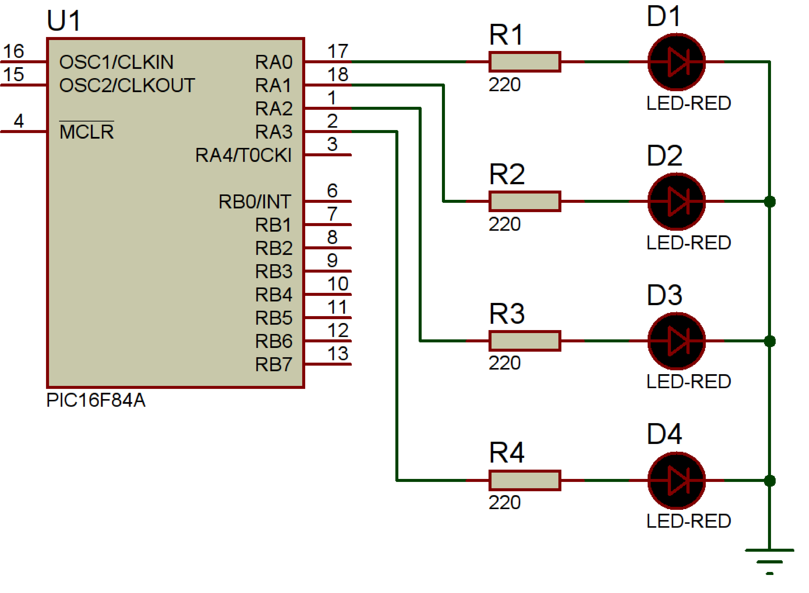
En aquest cas s’ha considerat que, si el microprocessador lliura un “1” lògic per un terminal determinat dels utilitzats (RA0, RA1, RA2 o RA3), aleshores el LED corresponent s’encendrà.
Podem commutar la polaritat dels LEDs i connectar al positiu, redreçant el circuit tal i com es mostra a la figura següent:
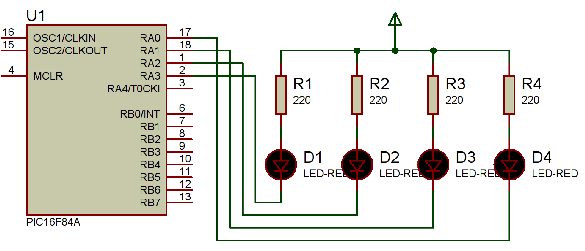
En aquest cas, per encendre un LED s’haurà de treure un “0” lògic pel terminal corresponent.
La barra de LEDs
Als circuits on es necessiti un nombre elevat de LEDs, o si volem construir un indicador de nivell amb LEDs (un termòmetre, per exemple), podem fer servir les barres de LEDs.
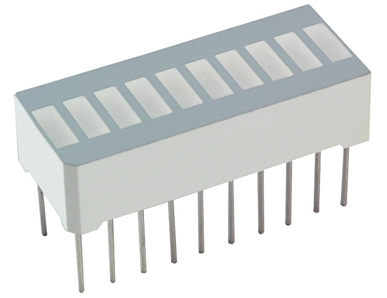
Aquests elements disposen d’un determinat nombre de LEDs en un encapsulat únic (típicament 10), cosa que millora el disseny del circuit físic, permetent reduir la seva mida.
Típicament poden trobar-se de colors vermell o verd en configuracions de 10 LEDs.
El tipus d’encapsulat (footprint) és el mateix que el d’un circuit integrat de 20 terminals (10 a cada banda), si és un array de 10 LEDs. Per tant, podria col·locar-se amb un sòcol DIL20.
En aquest punt és interessant notar l’existència dels arrays de resistències fixes; que, a diferència de la barra de LEDs, en aquest cas es disposa d’un dels dos terminals de les resistències en forma compartida.
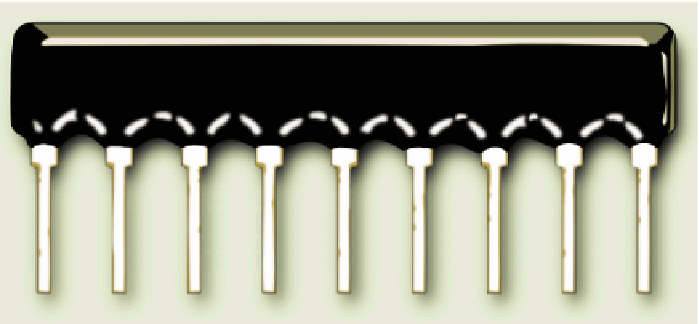
Aquests grups de resistències, combinats amb els arrays de LEDs, permeten una reducció molt important de l’espai necessari per als senyalitzadors del nostre circuit.
Quant a les consideracions tècniques referents a tensions i corrents, els paràmetres dels arrays de LEDs solen ser semblants als dels LEDs individuals; de manera que requerirem, novament, resistències limitadores de corrent de valors similars als anteriors.
Les caigudes de tensió necessàries per a fer-los funcionar són les habituals, d’entre 1.7V i 2.2V, segons el tipus de LED que contenen (sobretot depenent del color, perquè els verds normalment requereixen una tensió més alta que els vermells).
La figura següent mostra un circuit de microprocessador amb una barra de LEDs i array de resistències.
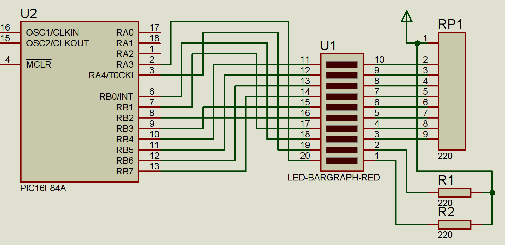
La figura següent mostra com queda una placa de circuit imprès fent servir aquests elements.
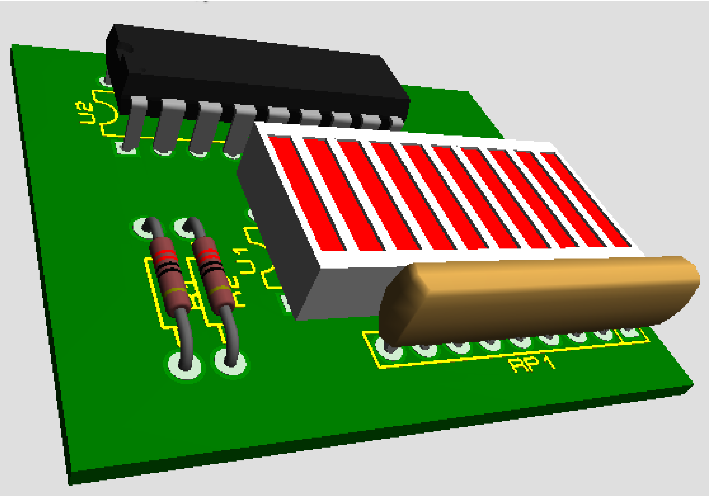
El LED a través de transistor
No tots els dispositius electrònics són capaços d’oferir a les seves sortides una intensitat de corrent sortint o entrant elevats. Existeix el cas de dispositius que gairebé no arriben als pocs mil·liampers i que, per tant, són incapaços d’alimentar adequadament LEDs i altres dispositius senyalitzadors de sortida.
També pot donar-se el cas que la suma de tots els corrents generats o absorbits pels diferents terminals del circuit integrat en qüestió és superior al límit recomanat pel fabricant, sobretot relacionant-ho amb la dissipació de potència en el seu interior i el perill que això comporta sobre la longevitat del C.I. mateix.
La solució que sempre tenim disponible és cedir la responsabilitat d’oferir corrent a un altre dispositiu. I el cas més senzill és el simple transistor BJT, ja sigui en configuració NPN com PNP.
Com sabem, un transistor BJT presenta un factor de guany en corrent que segueix l’expressió:
\[I_C=\beta_F\cdot I_B\]
El paràmetre de guany de col·lector, \(\beta_F\) es pot trobar també escrit com a \(h_{fe}\), corresponent al mateix paràmetre en tots dos casos.
Així doncs, en termes generals, el que ens interessa és aplicar el transistor de manera que el corrent de col·lector sigui el necessari per a fer funcionar el dispositiu que hi posem; i a la vegada, fer que el mateix transistor es quedi amb el mínim potencial aplicat entre col·lector i emissor, de manera que la seva dissipació d’energia sigui la mínima possible. A aquest punt de treball dels transistors se l’anomena saturació.
De manera similar, quan el transistor no ha de conduir, ha de quedar-se amb tot el potencial disponible, fent que el corrent sigui exactament zero. A aquest punt de treball dels transistors se l’anomena tall.
Commutar a un transistor de tall a saturació serà possible amb configuracions com les mostrades aquí:
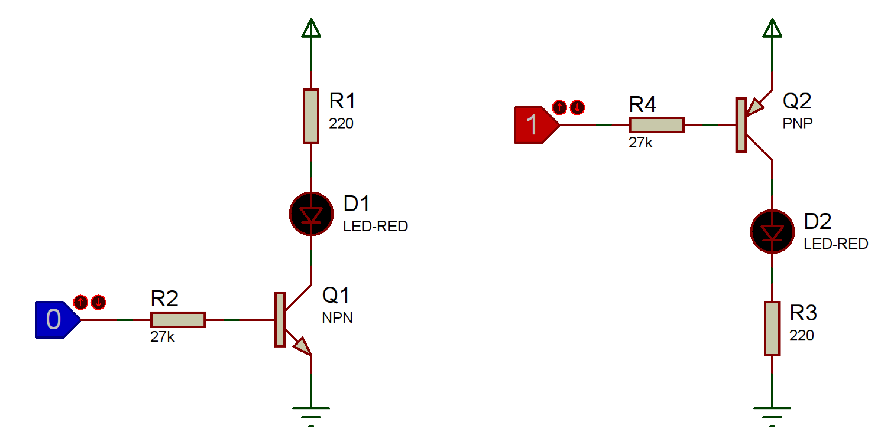
Quant als càlculs necessaris per a ajustar les resistències que hi són presents, prendrem el cas NPN (el PNP és exactament igual, canviant “1” per “0” i viceversa).
En primer lloc volem que quan el transistor estigui en tall, aquest no provoqui el pas de corrent. Això ja ho aconsegueix la configuració mostrada.
En segon lloc, volem que quan el transistor condueixi (activem el LED des de l’entrada aplicant un “1” a la resistència del terminal de base del transistor), aleshores ho faci en saturació. La saturació consisteix en una mínima caiguda de potencial entre col·lector i emissor. El valor habitual és de 0.2V.
Si el circuit està en saturació, quedaran disponibles per al LED i la resistència de col·lector un total de: \[5V-0.2V=4.8V\]
(Estem considerant una alimentació de 5V).
De la mateixa manera, el LED mateix necessitarà 1.7V per encendre’s, de manera que la caiguda de potencial desitjat a la resistència quedarà reduïda a:
\[ 4.8V-1.7V=3.1V \]
Si volem que el LED s’encengui amb uns 15mA de corrent (lluminositat mitja-alta), aleshores necessitem una resistència de col·lector de:
\[R_C=\frac{3.1}{0.015}=206.\widehat{6}\approx 220\Omega\]
Per tant, el corrent real que en resultarà serà de:
\[I_C=\frac{3.1}{220}=0.0141=14.1mA\]
Si treballem amb un transistor NPN de guany \(h_{fe}=100\) (els transistors presenten guanys com aquest o superiors), aleshores el corrent de base que ha d’existir serà de:
\[I_B=\frac{I_C}{h_{fe}}=\frac{0.0141}{100}=0.000141=0.141mA\]
En la base del transistor, aquest sempre es quedarà amb una tensió de 0.7V per l’efecte díode present entre base i emissor. Així doncs, la resistència de la base presentarà una caiguda de tensió de
\[5V-0.7V=4.3V\]
(Considerant que el “1” sigui exactament 5V).
Així doncs, sabem corrent i tensió i, aplicant llei d’Ohm, podem trobar la resistència de base necessària:
\[R_B=\frac{4.3}{0.000141}=30496.45 \approx 27k\Omega\]
Observi’s que hem arrodonit cap avall. Això és perquè la saturació s’aconsegueix amb valors més baixos de resistència, no més elevats. Si els dispositius presenten derives dels seus paràmetres, anirem més segurs si utilitzem una resistència més baixa.
Els paràmetres que fan que aquests càlculs no siguin precisos són:
- La tensió base-emissor no és constant de 0.7V
- La tensió que necessita el LED per encendre’s no és sempre 1.7V
- La \(h_{fe}\) no és independent de la tensió aplicada i presenta una tolerància elevada
Per tot això, cal fer un arrodoniment de la resistència de base, \(R_B\), cap avall; i així assegurar-nos que s’assoleix saturació o s’està molt aprop.
Si s’observa la característica tècnica d’un transistor real, com el BC547, s’observarà que la seva \(h_{fe}\) pot oscil·lar entre 110 i 800!!! Si considerem \(h_{fe}\) de 110, la resistència de base hauria de ser de 33kΩ, mentre que si considerem que \(h_{fe}\) és 800, la resistència de base hauria de pujar als 240kΩ. Evidentment ens quedaríem amb el cas més baix, el de 33kΩ.
A més, pensi’s que 0.2V entre col·lector i emissor, amb 20mA de corrent, provoquen una dissipació de potència de 4mW. Si ens equivoquem i cauen entre col·lector i emissor més Volts per no trobar-se en saturació, estarem provocant una dissipació de potència molt major, que podria superar el màxim permès pel dispositiu concret triat. Això és molt important en muntatge miniatura superficial (transistors SMD).
El relé
Un relé és un dispositiu electrònic-mecànic que fa d’interruptor control·lat. Si passa corrent a través de la seva bobina en quantitat suficient, és capaç de tancar un contacte mecànic que activa un altre circuit, totalment independent elèctricament del primer.
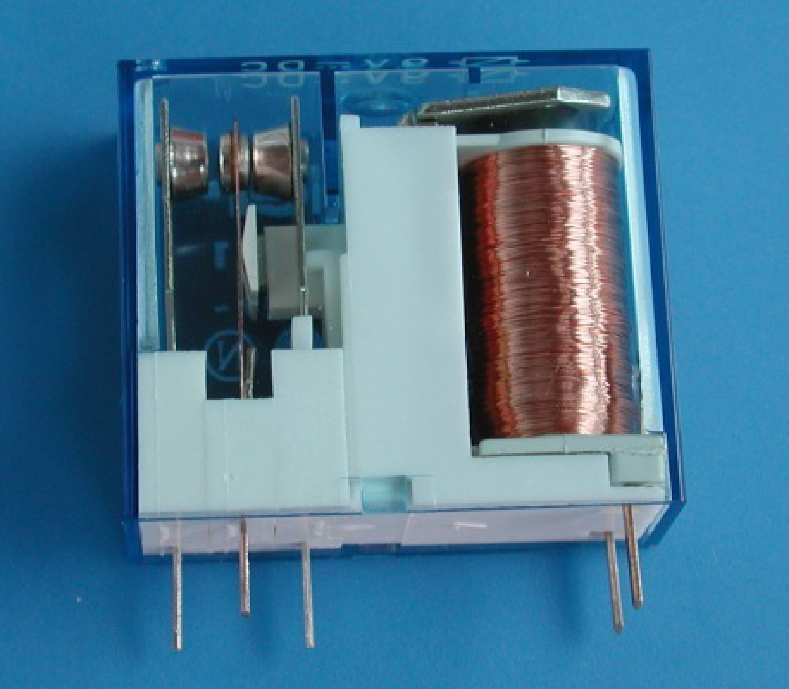
Així doncs, amb relés, podem controlar motors de 24V, bombetes de 220V i altres mecanismes simplement des d’un senyal digital tipus “0”/“1” lògic.
Malauradament, un circuit electrònic digital no pot comandar de manera directa la bobina del relé; i necessitem, forçosament, d’un transistor per a proporcionar el corrent requerit.
Com que un relé consta d’una bobina, i aquesta bobina ha de ser capaç de moure el mecanisme del contacte mecànic. Això vol dir que la resistència equivalent de la bobina és d’uns pocs Ohms. A més, la bobina ha de ser alimentat a una tensió que dependrà del model concret de relé que es triï.
Així doncs, podem trobar relés de 12V amb una bobina que presenta una resistència equivalent de 240Ω, per exemple.
Un circuit per a condicionar la sortida digital d’algun circuit electrònic i alimentar adequadament un relé pot ser com el mostrat a la figura següent (de fet, podria construir-se l’equivalent amb transistor PNP)
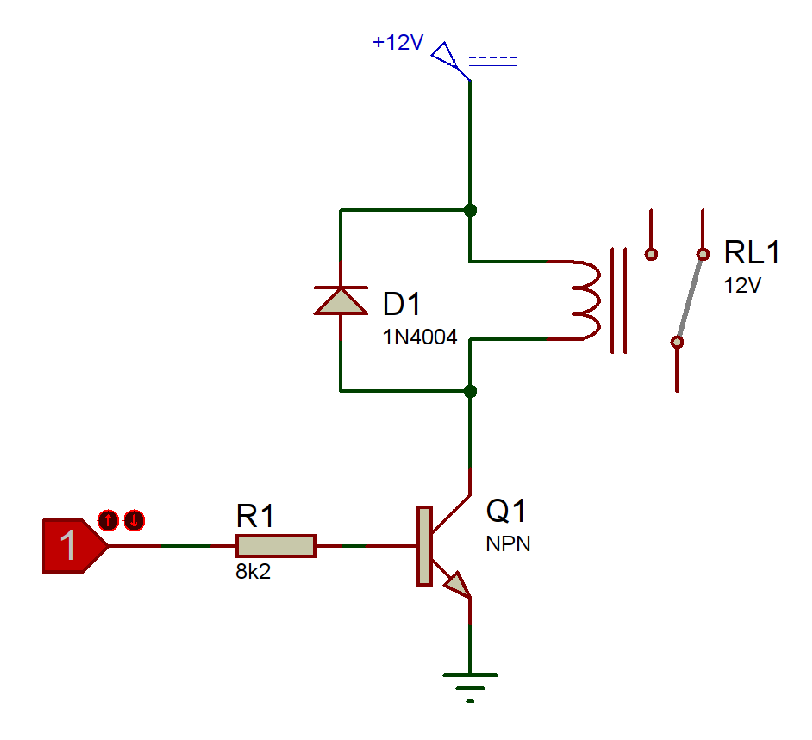
En aquest cas hem de calcular la resistència de base necessària per a fer funcionar el relé, minimitzant la caiguda de tensió entre col·lector i emissor del transistor.
A continuació es mostren els càlculs per a un relé de 12V, 240Ω, amb transistor BC547.
Si el transistor ha d’estar en saturació, aleshores el corrent de col·lector ha de ser:
\[I_C=\frac{12-0.2}{240}=0.04917=49.17mA\]
Assumint una \(h_{fe}\) del transistor de 100, aleshores el corrent de base haurà de ser:
\[I_B=\frac{I_C}{h_{fe}}=0.04917/100=0.0004917 = 0.4917mA\]
Com que en el terminal de base el senyal digital considerem que és de 5V per a codificar un “1” lògic, aleshores, tenint present la caiguda de 0.7V a la base del transistor, tindrem:
\[R_C=\frac{5-0.7}{0.0004917}=8745.17\approx 8k2\Omega\]
Això vol dir que necessitarem una resistència a la base del transistor d’uns 8k2Ω.
Evidentment, succeeix el que es comentava amb els LEDs: els transistors presenten guanys no constants, de la mateixa manera que els 0.7V de base són un valor mitjà.
També s’haurà observat el díode col·locat en polarització inversa en paral·lel amb el relé. Aquest díode és imprescindible perquè protegeix el transistor i l’alimentació dels pics provocats per la commutació de la bobina del relé. No oblidem que es tracta d’una bobina i el seu efecte sobre el circuit pot ser destructiu des del punt de vista de contaminar els senyals. El díode anul·la aquests espuris, protegint transistor, circuits lògics i alimentació global.
Els LEDs multiplexats
En un circuit complex, amb molts LEDs que puguin estar encesos a la vegada, ens podem trobar amb la limitació que el consum global de tots els LEDs és excessiu, o pot arribar a ser-ho en cas que tots ells s’encenguin. Això provoca que el circuit que els ha d’alimentar hagi d’estar preparat per a suportar una dissipació de potència elevada.
No obstant això, els LEDs són indicadors per a l’ull humà, i aquest últim presenta una limitació que ens afavoreix, i és que si un LED està encenent-se i apagant-se a una freqüència superior als 50Hz, l’ull considera que està permanentment encès. A això se li diu “persistència de la visió”, i és un fenomen conegut i estudiat en extrem.
Podem aprofitar aquest fet, de manera que només un o uns pocs LEDs estiguin encesos a la vegada i la resta apagats, i fer un recorregut per tots els LEDs, de manera que la freqüència total (corresponent al recorregut per tots els LEDs) sigui superior a aquests 50Hz.
Un a un
Un circuit que podria explotar la característica esmentada fins ara, de manera individual per a cada LED, seria el de la figura següent:

Considerant els 16 LEDs del circuit mostrat anteriorment, podríem fer el cronograma corresponent a la representació de la combinació “1110 1011 1001 1011”, on el bit mostrat primer és el del LED numerat D1; i on “1” representa “LED encès”, perquè en el circuit s’encén el LED per nivell baix. Això és mostrat a la figura següent:
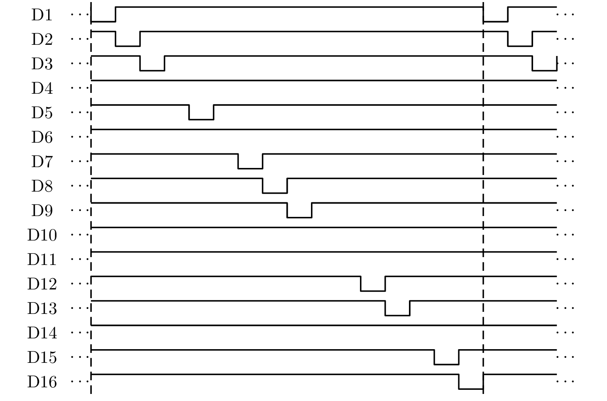
La contrapartida és que, com cada LED individual estarà apagat durant un temps (el temps que s’estigui tractant la resta de LEDs), aquest presentarà una nivell de lluminositat més baix. En funció de la relació entre el temps encès i el temps apagat, tindrem un nivell de llum efectiu determinat.
Podem veure això també com un “duty cicle” si mirem el senyal que afecta a cada LED.
Si observem el LED D1, aquest estarà encès (si ho ha d’estar) només 1/16 del temps. Això vol dir que el nivell de lluminositat efectiva (en mitjana) és una setzena part de la que presentaria si estigués alimentat contínuament durant tot el temps. Passarà el mateix amb qualsevol altre LED que hagi de mostrar-se encès.
Aquesta reducció de lluminositat efectiva del LED pot contrarestar-se reduint la resistència limitadora del LED. En comptes de 220Ω, podríem posar una resistència 16 vegades menor (uns 13.75Ω) o, fins i tot, traient les resistències limitadores!
I és que en alguns circuits, on la reducció de lluminositat efectiva és molt gran, s’eliminen les resistències limitadores i es treballa sota el supòsit que el mateix dispositiu de sortida digital tindrà algun tipus de limitació de corrent sortint. Per exemple, que limiti a 50mA per terminal. Aleshores, el LED s’encendrà durant 1/16 del temps a un nivell de lluminositat de 50mA, cosa que equivaldria a un nivell de lluminositat efectiu d’uns 3.125mA.
En agrupacions
Com que una reducció de 1/16 pot ser massa forta en alguns LEDs de poca lluminositat, es pot optar per agrupar els LEDs en grups d’unes poques unitats.
Suposem que triem una mida de grup de 4. Aleshores els LEDs s’encendran de 4 en 4 i, globalment el temps de cicle és reduirà en una quarta part. El nivell de lluminositat efectiu serà doncs de només 1/4.
Per fer això hem de controlar quin grup de LEDs pot estar encès o no, i per tant necessitem que l’alimentació ja no sigui directament la de la font d’alimentació. Requerim ara un transistor controlat per un terminal que alimenti al grup individual que s’ha d’encendre.
La figura següent mostra una possible solució a l’esmentat aquí.
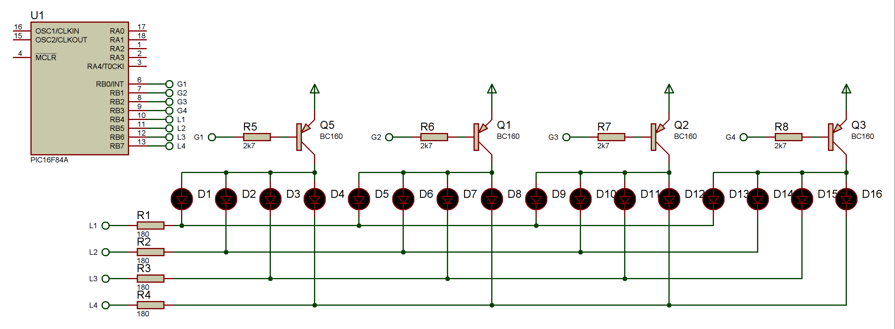
Si s’observa aquest disseny, individualment cada LED està controlat per dos terminals del microprocessador: El terminal de grup (per exemple, G2), i el terminal de LED dins del grup (per exemple, L3). Així doncs, per a encendre un LED determinat hem de donar tensió baixa (un “0”) als dos terminals que adrecen el LED concret.
El motiu del transistor és el de seleccionar el grup que volem adreçar, activant el grup amb un “0” en el terminal de control apropiat; mantenint a “1” la resta, evidentment.
Amb un grup activat, podem seleccionar la combinació de LEDs d’aquell grup que volem encendre, posant a nivell baix els terminals corresponents L1, L2, L3 i L4. Això permet activar els quatre LEDs simultàniament si es desitgés.
La figura següent mostra com s’encendrien els 16 LEDs en aquesta disposició per a mostrar la combinació de “1110 1011 1001 1011”. De nou, un “1” indica “LED encès”. Això en aquest circuit es tradueix en una combinació determinada de nivells baixos en els terminals de selecció de grup i LED individual.
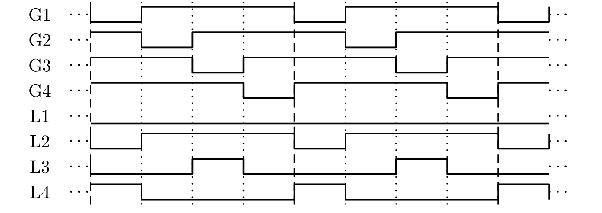
Lògicament el corrent que passa per cada transistor variarà en funció de la combinació de LEDs que s’encenen, des de cap LED (0mA) fins a 4 LEDs (4 vegades la intensitat que defineixen les resistències limitadores).
En aquest cas concret, amb els dispositius mostrats, el corrent que passa per cada LED, quan s’encén, és d’uns 15mA, aproximadament.
El corrent, en termes reals, variarà en funció de la combinació, però d’una manera lleugera (1mA de diferència entre 1 LED i 4 LEDs, per al cas mostrat).
A més, el microprocessador hauria de ser capaç de donar individualment els 15mA per cadascun dels 4 terminals que adrecen els LEDs, i uns 1.5mA per al terminal d’activació de grup. A més, no s’ha de superar el límit global amb el corrent total, que en aquest cas seria de 4 vegades 15mA més els 1.5mA, és a dir, uns 62mA.
LEDs i registres
Una manera de reduir el consum de corrent del microprocessador i traspassar-lo a algun altre dispositiu podria ser tenir registres lògics que emmagatzemin la seqüència de LEDs que s’ha de mostrar. Podríem fer una construcció com la mostrada a la figura aquí:
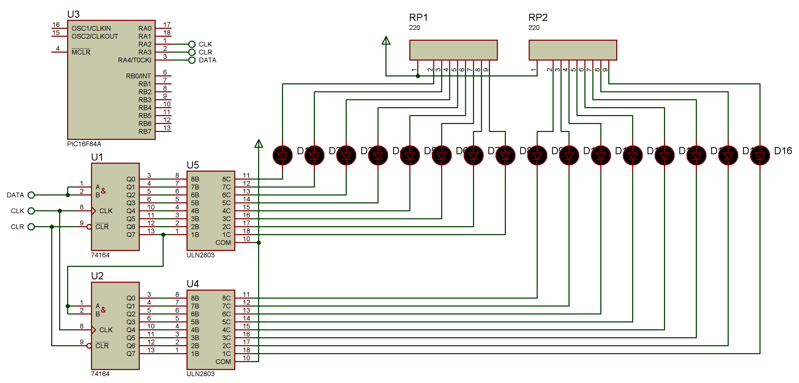
Es pot observar que la càrrega dels registres fa que en el microprocessador només fem servir 3 terminals: Un per a la dada, un altre per al rellotge, i un altre per a controlar el reset dels registres.
Els registres, per la seva part, estan encadenats en cascada. La sortida de major pes (Q7) del primer element (U1) està disposada com a entrada de dades del següent element de registre (U2).
També és important notar que en aquest sistema tots els LEDs poden estar il·luminats. Això provocaria un elevat consum que, potser, el circuit integrat de registres no podria tolerar. Pensem que 8 LEDs a 20mA genera un consum total de 160mA…
Per evitar aquest problema podem triar un circuit integrat que faci la funció de “driver” de corrent. Aquest es veu en la forma de U4 i U5 en el circuit de la figura anterior, i és el circuit integrat ULN2803. Aquest circuit consta de 8 transistors NPN en configuració Darlington i és ideal per a aquest tipus de configuracions.
El circuit integrat ULN2803 serà l’encarregat de lliurar als LEDs tot el corrent que demanin, i tot segons el senyal lògic present als terminals d’entrada (que són les sortides del registre de desplaçament).
La figura següent mostra el cronograma associat a aquest circuit per a mostrar la seqüència binària “1110 1011 1001 1011”.
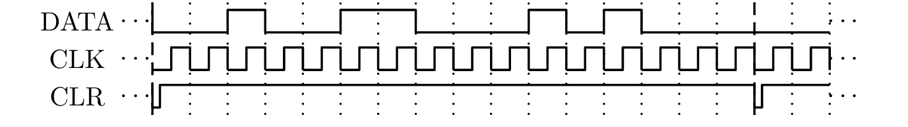
Noti’s que el CLR és enviat a l’inici de cada bloc d’actualització, però que en realitat seria millor no fer-lo servir. En aquest cas el registre de desplaçament 74164 fa el reset amb zeros; i això provocaria que, durant un breu període de temps, tots els LEDs estarien encesos.
Podríem invertir aquesta situació fent que els LEDs s’encenguessin per “1”, disposant el terminal comú del pack de resistències a GND, i canviant la polaritat dels LEDs. Malauradament, això és impracticable si volem fer servir el circuit integrat ULN2803, perquè es tracta d’un grup de 8 Darlington tipus NPN. Hauríem de substituir-lo també per un circuit integrat Darlington però de tipus PNP.
La tècnica del charlieplexing
En el cas de sistemes amb una quantitat de terminals reduït, on la mida del circuit és important, podem optar per tècniques addicionals que milloren tot això.
Fins ara s’ha vist que:
- Fer servir multiplexació presenta un important avantatge: La quantitat de terminals utilitzats es redueix enormement, però no a un extrem mínim.
- Sí és mínim, si fem servir registres; però el consum és constant i força elevat amb, en algun cas, tots els LEDs encesos a la vegada.
- La multiplexació redueix l’índex de lluminositat en funció de la quantitat de LEDs que simultàniament s’encenen.
Ens interessaria un sistema que permeti la multiplexació per l’avantatge que suposa en termes de consum d’energia, però amb la reducció màxima de terminals. Amb, evidentment, el cicle més curt possible per aprofitar el màxim d’il·luminació.
Això és possible si estudiem com funciona el LED i com podem alimentar-lo.
Suposem en primer lloc, dos LEDs disposats en paral·lel i amb polaritats invertides. Això es mostra a la figura següent.
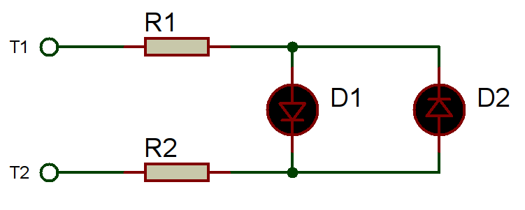
Si cada extrem l’alimentem des d’un terminal del microprocessador, podem optar per les següents combinacions:
| T1 | T2 | Led 1 | Led 2 |
|---|---|---|---|
| 0 | 0 | Apagat | Apagat |
| 1 | 0 | Encès | Apagat |
| 0 | 1 | Apagat | Encès |
| 1 | 1 | Apagat | Apagat |
Com es veu, les resistències en sèrie amb els terminals del microprocessador permeten limitar el corrent que passa a través dels LEDs.
Que, amb dos terminals, alimentem dos LEDs no sembla gaire engrescador, però analitzant el cas de 3 terminals, la cosa canvia. La figura següent mostra una configuració de 6 LEDs controlats per només tres terminals.
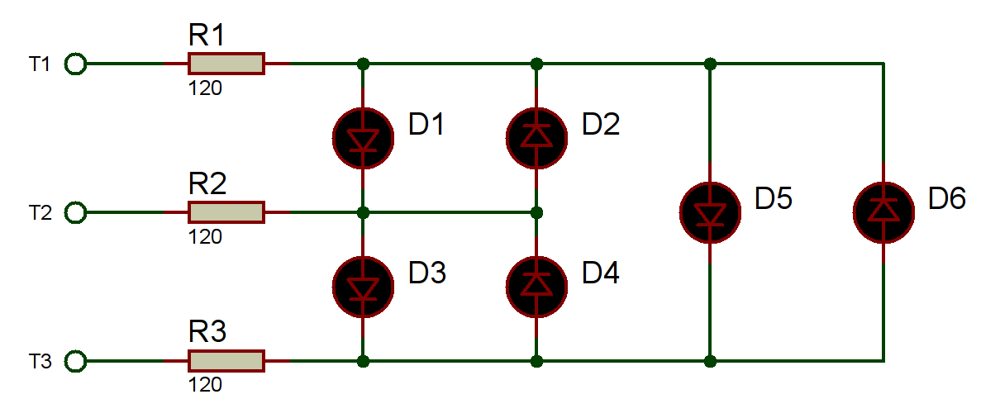
La taula següent recull com s’haurà d’alimentar cada terminal per a aconseguir les diferents combinacions d’encesa de LEDs:
| T1 | T2 | T3 | Led 1 | Led 2 | Led 3 | Led 4 | Led 5 | Led 6 |
|---|---|---|---|---|---|---|---|---|
| 1 | 0 | Z | Encès | Apagat | Apagat | Apagat | Apagat | Apagat |
| 0 | 1 | Z | Apagat | Encès | Apagat | Apagat | Apagat | Apagat |
| Z | 1 | 0 | Apagat | Apagat | Encès | Apagat | Apagat | Apagat |
| Z | 0 | 1 | Apagat | Apagat | Apagat | Encès | Apagat | Apagat |
| 1 | Z | 0 | Apagat | Apagat | Apagat | Apagat | Encès | Apagat |
| 0 | Z | 1 | Apagat | Apagat | Apagat | Apagat | Apagat | Encès |
| … | … | … | Apagat | Apagat | Apagat | Apagat | Apagat | Apagat |
Observi’s que s’ha tingut en compte la possibilitat de què el microprocessador sigui capaç d’emetre un estat d’alta impedància a les seves sortides.
La figura següent mostra la situació amb 4 terminals, que permet disposar de 12 LEDs.
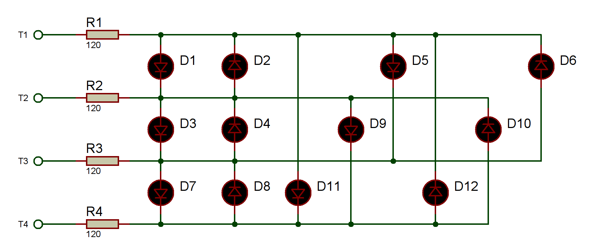
En general, per a \(n\) terminals en el microprocessador, s’obté la possibilitat d’adreçar \(n\cdot(n-1)\) LEDs.
\[ n\textrm{ terminals} \Longrightarrow n\cdot (n-1) \textrm{ LEDs} \]
Així, amb només 10 terminals podrem adreçar un total de 90 LEDs, per exemple.
Aquests totals, fora de sorprendre’ns per veure com augmenta la quantitat de LEDs de manera increïble, ens porta a una problemàtica associada; i és que la tècnica per a adreçar aquests LEDs no deixa de ser com una multiplexació i, per tant, patirem una reducció d’il·luminació important. Haurem de triar una freqüència alta d’actualització per a recórrer, un a un, tots i cadascun dels LEDs, i fer que el període complet d’escombrat sigui suficientment alt com per a donar la sensació de persistència de la visió.
No s’ha d’oblidar que, per a multiplexar una gran quantitat de LEDs, aquests romandran gran part del temps apagats; i per tant, el nivell d’il·luminació serà molt baix. Podem compensar-ho també augmentant el corrent per LED, i això pot portar-nos a anular-la directament. Això no és perillós, perquè el temps d’encesa del LED és baix i el que importa és el consum mitjà. A més, el consum del dispositiu que proporciona el senyal estarà control·lat pels seus propis mecanismes interns de protecció. Molts dispositius no poden proporcionar més de 25mA en els seus terminals gràcies als dispositius limitadors que incorporen.
Un exemple d’aplicació de la tècnica de charlieplexing pot ser la construcció d’un rellotge amb LEDs disposats circularment, consistent en:
- 60 LEDs per a indicar els minuts. Els LEDs es poden tenir encesos tots des del 0, o només aquell que sigui el del minut actual.
- 12 LEDs bicolor per a indicar les hores. Un color servirà per indicar l’hora actual, mentre que l’altre serà sempre encès per a indicar on estan les marques quan s’estigui amb poca llum ambiental.
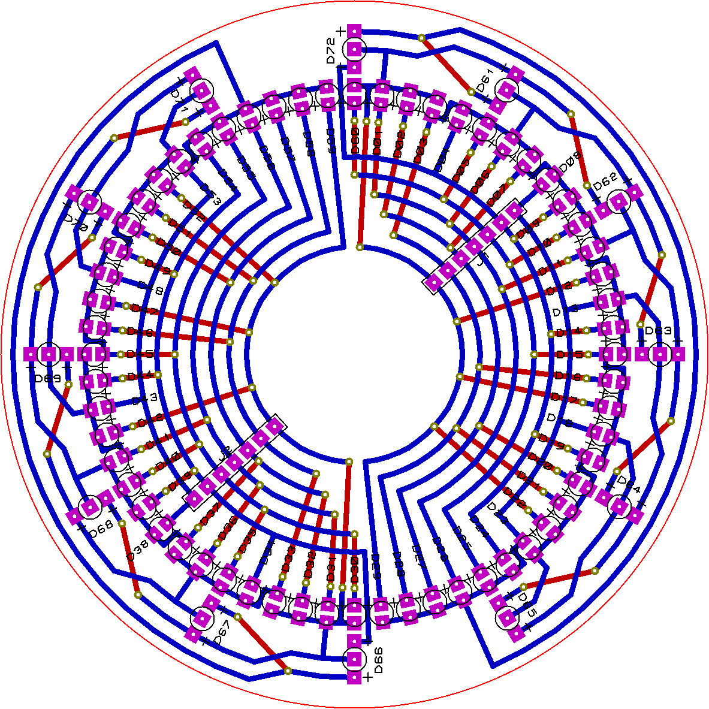
Això comporta que s’han de controlar, en realitat, 84 LEDs (60+12+12). Podem dividir aquest total en dues meitats, per a millorar la persistència de visió i augmentar la il·luminació resultant, a més de simplificar el layout del circuit.
Amb dos grups de 42 LEDs necessitarem 7 terminals per a cada grup. O sigui, un total de 14 terminals de microprocessador (dos grups independents de 7 terminals).
Això és el mostrat a la figura anterior (layout); i la vista 3D resultant a les figures següents:
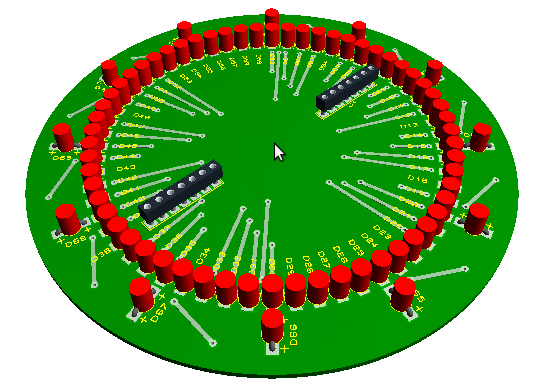
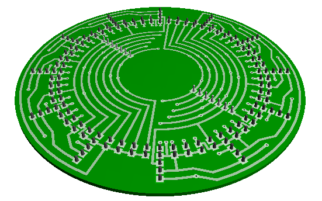
… continuarà …